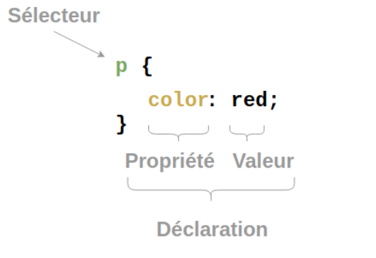

Introduction au CSS
Si HTML décrit la structure du document, CSS en réalise la mise en forme.C’est CSS qui permet d’appliquer des couleurs, des changements de fontes, de taille etc.CSS pour “Cascading Style Sheets” ou “feuilles de style en cascadre”

Le principe de CSS
Le principe de CSS est d’appliquer une mise en forme à un ou des éléments sélectionnés.Ainsi :

Va :
<p> { } color désigne la couleur du texte, qui sera rouge.
Anatomie d’une règle CSS
La première ligne d'en-tête a été considérablement simplifiée. On peut maintenant retenir un doctype par coeur, sans avoir à le copier-coller.
Sélecteur
C’est le nom de l’élément HTML situé au début de l’ensemble de règles. Il permet de sélectionner les éléments sur lesquels appliquer le style souhaité (en l’occurence, les éléments p). Pour mettre en forme un élément différent, il suffit de changer le sélecteur.
Déclaration
C’est une règle simple comme color: red; qui détermine les propriétés de l’élément que l’on veut mettre en forme.
Propriétés
Les différentes façons dont on peut mettre en forme un élément HTML (dans ce cas, color est une propriété des éléments ‘p’). En CSS, vous choisissez les différentes propriétés que vous voulez utiliser dans une règle CSS.
Valeur de la propriété
À droite de la propriété, après les deux points, on a la valeur de la propriété. Celle-ci permet de choisir une mise en forme parmi d’autres pour une propriété donnée (par exemple, il y a d’autres couleurs que red pour la propriété color).
Les autres éléments importants de la syntaxe sont :
- chaque ensemble de règles, à l’exception du sélecteur, doit être entre ccolades
{}. - pour chaque déclaration, il faut utiliser deux points
:pour séparer la propriété de ses valeurs. - pour chaque ensemble de règles, il faut utiliser un point-virgule
;pour séparer les déclarations entre elles.
Ainsi, si on veut modifier plusieurs propriétés d’un coup, on peut utiliser plusieurs déclarations dans une seule règle en les séparant par des points-virgules :

Sélectionner plusieurs éléments
Il est aussi possible de sélectionner plusieurs types d’éléments pour appliquer à tous une même règle. Il suffit de placer plusieurs sélecteurs, séparés par des virgules. Par exemple :

Les différents types de sélecteurs
Il y a différents types de sélecteurs. Dans les exemples précédents, nous n’avons vu que les sélecteurs d’élément qui permettent de sélectionner les éléments HTML d’un type donné dans un document HTML. Mais ce n’est pas tout, il est possible de faire des sélections plus spécifiques. Voici quelques-uns des types de sélecteur les plus fréquents :
Les sélecteurs de balise
Ils sélectionnent toutes les balises portant ce nom.

Les sélecteurs d’ID
Ils sélectionnent LA balise portant cette id

Les sélecteurs de classes
Ils sélectionnent TOUTES les balises portant cette classe

Les sélecteurs de classes
Ils sélectionnent les éléments donnés mais uniquement dans un certain état

Les grands types de mise en forme
On peut séparer en quelques grandes catégories les propriétés appliquées.
Les polices de caractères
Ce sont les propriétés qu’on applique au texte lui même : couleur, taille, épaisseur, fonte etc.
Les boites
Ces propriétés décrivent les marges intérieures
paddinget extérieuresmarginainsi que la bordureborderainsi que la taille en largeur, hauteur, la couleur de fond etc.L’alignement
Souhaite-t-on aligner horizontalement, verticalement, avoir une image positionnée précisement ou à une position dépendant des dimensions de la page ?